Ability Tree Strategies Combat Ability Branch
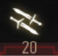 Combat (Ability Branch: 91 Total Points)
{kind=link}
The Combat Ability branch builds upon Geralt’s skills in battle, with a heavy focus on how Geralt fights and defends with his swords.
{kind=link}
Fast Attack Abilities (4 Abilities, 20 Points)
{kind=link}
Perform fast melee attacks with either sword.
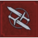 Muscle Memory (5 Levels)
Muscle Memory (5 Levels)
{kind=link}
Fast attack damage is increased by the following:
| Level | Increase (%) |
|---|---|
| 1 | 5% |
| 2 | 10% |
| 3 | 15% |
| 4 | 20% |
| 5 | 25% |
| Points in branch needed to unlock: 0 | |
Notes: If you have a redisposition to utilize fast attacks, and want each strike to inflict more pain, then use this ability. It is one of the first recommended abilities to purchase, forms the base of most Combat archetypes, and enables you to cut down foes in fewer strikes (as more damage is awarded). Thoroughly recommended, as this damage stacks with other abilities.
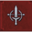 Precise Blows (5 Levels)
{kind=link}
Increases the chance of landing a fast attack critical hit and fast attack critical hit damage by the following:
| Level | Increased Chance (%) | Damage (%) |
|---|---|---|
| 1 | 2% | 15% |
| 2 | 4% | 30% |
| 3 | 6% | 45% |
| 4 | 8% | 60% |
| 5 | 10% | 75% |
| Points in branch needed to unlock: 8 | ||
Notes: An amazing ability for those wishing to perfect the unsubtle art of slicing up foes with swords. Though the Critical Hit chance may seem small (and you are encouraged to increase the Level to 5), the sheer number of times you employ fast attacks, and the fact this ability stacks with other abilities and equipment that increases your Critical Hit chance (such as the Ursine Swords for example), means you’re never more than a few sword swings from a massive influx of damage. Think about partnering this Ability with Whirl, and think about how many opportunities for Critical carnage you have!
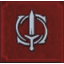 Whirl (5 Levels)
Whirl (5 Levels)
{kind=link}
A spinning attack that strikes all foes in the surrounding area. Maintaining the attack consumes Stamina and Adrenaline. Higher Levels of this ability lessen the Stamina and Adrenaline needed as follows:
| Level | Stamina and Adrenaline Needed (%) |
|---|---|
| 1 | Normal |
| 2 | -20% |
| 3 | -30% |
| 4 | -40% |
| 5 | -50% |
| Points in branch needed to unlock: 20 | |
Notes: This allows Geralt to spend Adrenaline and Stamina, executing a spinning frenzy that strikes all targets around him. If you favor an aggressive melee style to your combat, and need additional methods to resolve violence, this can be a worthy talent to spend points on. In fact, some utilize this for every fight, especially against human-sized foes where you can “mow down” foes quickly. This is especially true if you have enchantements, armor, weapons, or other abilities that help negate the extra Adrenaline and Stamina needed. Don’t forget this doesn’t work with fists, and is an “alternate attack”; place this ability into a slot, and hold down the fast attack button to execute it!
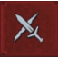 Crippling Strikes (5 Levels)
{kind=link}
Fast attacks now also apply a Bleeding effect. Affected enemies lose a number of Vitality or Essence points per second as follows. Duration is five seconds for all Levels.
| Level | Vitality/Essence lost |
|---|---|
| 1 | 25 |
| 2 | 50 |
| 3 | 75 |
| 4 | 100 |
| 5 | 150 |
| Points in branch needed to unlock: 30 | |
Notes: Anyone skilled in quick strikes enjoys bleeding their enemies out in addition to all the other damage they can cause. Crippling Strikes, especially at high Levels, deliver guaranteed number of health points for each successful strike. So, at level 4, expect to inflict 400 more points of damage on a foe, assuming they aren’t resistant to bleeding. However, you may find your three Greater Dervana Runestones imbued into your Feline Mastercrafted Sword grants you much more damage potential, leaving you up to five Points to spend on combat skills in the Strong Attack branch.
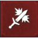 Strong Attack Abilities (4 Abilities, 20 Points)
{kind=link}
Allows you to perform strong melee attacks which ignore enemy armor.
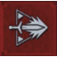 Strength Training (5 Levels)
{kind=link}
Strong attack damage is increased by the following:
| Level | Increase (%) |
|---|---|
| 1 | 5% |
| 2 | 10% |
| 3 | 15% |
| 4 | 20% |
| 5 | 25% |
| Points in branch needed to unlock: 0 | |
Notes: Just as Muscle Memory was the go-to Ability for Fast Attacks, so Strength Training is for Strong Attacks; especially as increasing both to Level 4 allows you to “unlock” the second tier of Combat abilities (as you’ve spent 8 points). Before you spend wildly on this, compared to Fast Attack abilities, gauge how many Strong Attacks you inflict in normal combat; if you find you aren’t using this attack type as often, you may wish to come back to this attack later. But make no mistake; for Combat-driven archetypes, this is a must-have purchase!
 Crushing Blows (5 Levels)
Crushing Blows (5 Levels)
Increases the chance of landing a strong attack critical hit and strong attack critical hit damage by the following:
| Level | Increased Chance (%) | Damage (%) |
|---|---|---|
| 1 | 2% | 15% |
| 2 | 4% | 30% |
| 3 | 6% | 45% |
| 4 | 8% | 60% |
| 5 | 10% | 75% |
| Points in branch needed to unlock: 8 | ||
Notes: Once again, this is the equivalent of a Fast Attack ability (Precise Blows), and it ups your chances of a successful Critical Hit, inflicts a huge amount of extra damage, and stacks with the other abilities, weapons, and enchantments that also raise the chances of inflicting some truly horrific damage. The only slight downside is that you don’t strike as often with Strong Attacks compared to Fast ones. The up side is that partnering this with abilities like Rend almost guarantees a single, devastating blow that will make you wince with pain and pleasure!
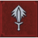 Rend (5 Levels)
{kind=link}
Deals additional damage in proportion to the Stamina consumed. Ignores enemy Defense and increases critical hit chance by the following amounts. Adrenaline Points increase total damage by 100%, per point spent of every level of this Ability.
| Level | Critical Chance (%) |
|---|---|
| 1 | 10% |
| 2 | 20% |
| 3 | 30% |
| 4 | 40% |
| 5 | 50% |
| Points in branch needed to unlock: 20 | |
Notes: This is another excellent choice for those looking to augment a combat-heavy archetype. This ability ignores defense with a charged-up strong attack, and works extremely well for those to know how to take advantage of openings the enemy provides. As long as you execute the attack (and time the release of the Strong button so you’re not using as much Stamina), you can attempt this again and again. The Critical Hit chance stacks with other abilities and bonuses, making this a truly grotesquely-powerful alternate strike in the right hands! Remember to equip this ability in a slot, and hold down the button to execute.
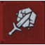 Sunder Armor (5 Level)
{kind=link}
Reduces enemy damage resistance by the following amounts:
| Level | Reduction (%) |
|---|---|
| 1 | 5% |
| 2 | 10% |
| 3 | 15% |
| 4 | 20% |
| 5 | 25% |
| Points in branch needed to unlock: 30 | |
Notes: Though the ability name mentions “armor,” this affects foes with or without protective shielding, including monsters. It simply reduces the damage resistance of a foe by an (increasingly impressive) amount, essentially allowing you to strike with more damage. The best news is that once you use this Strong attack successfully, you can can switch and slice away using faster attacks, and enjoy the reduction in enemy damage resistance whether you’re employing Fast or Strong attacks.
Defense Abilities (4 Abilities, 13 Points)
{kind=link}
Wolf School defensive techniques.
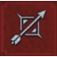 Arrow Deflection (3 Levels)
{kind=link}
Perfectly timed parries reflect back arrows with the following bonuses:
| Level | Bonus |
|---|---|
| 1 | No Bonus |
| 2 | Arrows reflected back at attacker |
| 3 | Arrows reflected back, double damage |
| Points in branch needed to unlock: 0 | |
Notes: While highly situational, this can prove to be a life saver, particularly against large groups of human bandits or other foes with archers. Arrows are often slung at Geralt throughout the adventure, and it helps to be able to negate the damage they cause. However, there are other abilities, such as Yrden Magic Trap (Signs Branch of Ability Tree), that have a similar effect with a great deal of additional help to your combat. Think about how many times you’ve been struck by an arrow—usually in Bandit Camps—making this ability more redundant (as you can always dodge or deflect an arrow and focus on an archer first).
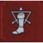 Fleet Footed (5 Levels)
{kind=link}
Damage from hits received while dodging is reduced by the following:
| Level | Reduction (%) |
|---|---|
| 1 | 20% |
| 2 | 40% |
| 3 | 60% |
| 4 | 80% |
| 5 | 100% |
| Points in branch needed to unlock: 8 | |
Notes: This takes some practice (as does normal dodging), but with the correct amount of room (don’t hit any scenery while dodging), you can withstand enemy strikes during a dodge. Try moving toward and around a foe rather than to the side, and learn the special attacks the larger enemies attempt, such as the stomp of a Golem or the pound of a Cyclops. Though this helps with damage, there is still the threat of being hit, so don’t expect invulnerability! Similarly, with practice, you may be able to dodge any foe’s attack without this ability, leaving you free to insert more sword-based carnage-causing abilities instead.
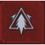 Counterattack (3 Levels)
{kind=link}
After a successful counterattack, the next attack deals the following extra damage per skill level, and is a critical hit with a chance for knockdown based on the number of Adrenaline Points.
| Level | Extra Damage |
|---|---|
| 1 | 30% |
| 2 | 30% (60% total) |
| 3 | 30% (90% total) |
| Points in branch needed to unlock: 20 | |
Notes: If your enemy is the type that uses swords, such as humanoid opponents, members of the Wild Hunt, and other unsavory types (but not monsters), and you find you’re attempting a normal counterattack anyway, this can be an excellent choice. Practice the timing of normal counterattacks, or this ability is useless. If you’re already inflicting a large amount of damage with critical hits, this can really help finish off a foe, and at Level 3, the chances of a knockdown are almost assured (after which you can kill them with a stab to their corpse on the ground). The only potential problem this the relatively few times enemies can be countered, compared to abilities that are helpful in almost every combat situation (such as Whirl).
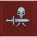 Deadly Precision (2 Levels)
{kind=link}
Each Adrenaline Point adds the following to the chance of killing an opponent instantly:
| Level | Chance of Kill |
|---|---|
| 1 | 1% |
| 2 | 2% |
| Points in branch needed to unlock: 30 | |
Notes: Though it takes a while to unlock, and is usually for Combat-centric archetypes that wish to place an ability in the four new “revealed” slots after Blood and Wine Mutations are unlocked, this is well worth adding. Initially, the chance of an instant kill seems small. But at Level 2, with helpful abilities like Razor Focus (giving you an Ability Point when entering combat and better Ability Point gains), and the Superior Maribor Forest (giving you another AP and gains), this percentage leaps to 6 percent; that’s a chance of one in just over 16 hits! Now think how many strikes you connect with using Whirl or Fast attacks, and you can see the benefits!
Marksmanship Abilities (4 Abilities, 18 Points)
{kind=link}
Allows you to wield a light hand-held crossbow.
 Lightning Reflexes (3 Levels)
Lightning Reflexes (3 Levels)
Time slowed by additional amount while aiming the crossbow, as follows:
Notes: As you use the Crossbow far less often than your swords, these abilities may not get the respect that Fast and Strong Attacks have, but Lightning Reflexes still has its uses. Perhaps you’re trying to shoot heads to complete the Master Marksman Achievement/Trophy? Or you want to more easily tag Drowners underwater, the flying Harpies of Velen, or swooping Sirens across the isles of Skellige? Then this gives you the extra time you may need. Of course, with practice you may find you don’t need this extra slowdown.
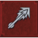 Cold Blood (5 Levels)
{kind=link}
Each bolt that hits its target adds the following Adrenaline Points:
| Level | Adrenaline Points |
|---|---|
| 1 | 0.04 |
| 2 | 0.08 |
| 3 | 0.12 |
| 4 | 0.16 |
| 5 | 0.2 |
| Points in branch needed to unlock: 8 | |
Notes: This helps you continuously fire your crossbow for longer, and build up your Adrenaline Points before switching to melee combat weaponry. As the crossbow isn’t a particularly damaging weapon, and Signs and Combat abilities are far less situational, pick this if you’re intending on foraging for wild animals, and are purely focused on a ranged archetype, perhaps with the Relic Crossbow Death from Above (which has an AP gain as well).
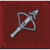 Anatomical Knowledge (5 Levels)
{kind=link}
Increases crossbow critical hit chance by the following amount:
| Level | Chance (%) |
|---|---|
| 1 | 5% |
| 2 | 10% |
| 3 | 15% |
| 4 | 20% |
| 5 | 25% |
| Points in branch needed to unlock: 20 | |
Notes: It can be extremely satisfying to whittle down the health of a foe by a more measurable degree before charging in to finish with swords, and this ability helps provide the chance at really inflicting some nasty ranged damage. It is also helpful when used with Crippling Shot (see below). Seek out a quality Crossbow, such as the Ursine Crossbow which has its own Critical Hit chance bonus, to further augment this ability.
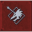 Crippling Shot (5 Levels)
{kind=link}
Critical hits dealt with the crossbow disable monster special abilities for the following time:
| Level | Time (Seconds) |
|---|---|
| 1 | 5 (Seconds) |
| 2 | 10 (Seconds) |
| 3 | 15 (Seconds) |
| 4 | 20 (Seconds) |
| 5 | 25 (Seconds) |
| Points in branch needed to unlock: 30 | |
Notes: Even if you just spend a single point on this ability, you’ve negated any special ability a monster may attempt to use on you; that alone could save you from some otherwise highly dangerous attacks, such as Hypnosis from a Fiend’s third eye. Partner this with Anatomical Knowledge and a good quality Crossbow with built-in critical hit chance bonuses, and you can effectively cripple the most fearsome of foes before launching bombs or melee strikes.
 Battle Trance Abilities (4 Abilities, 20 Points)
Battle Trance Abilities (4 Abilities, 20 Points)
Blows landed during combat generate Adrenaline Points. Each Adrenaline Point increases weapon damage by 10%.
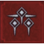 Resolve (5 Levels)
{kind=link}
Adrenaline Point loss upon taking damage is lowered by the following amount:
| Level | Lowered by (%) |
|---|---|
| 1 | 20% |
| 2 | 40% |
| 3 | 60% |
| 4 | 80% |
| 5 | 100% |
| Points in branch needed to unlock: 0 | |
Notes: Though it is always better to learn how to effectively dodge, roll, and parry (as well as counterattack) instead of getting hit, sometimes your combat techniques fail you. When starting your adventure, especially on higher difficulty settings, it may behoove you to purchase this, simply so you can function in battle. You may find partnering this with other abilities that influence Adrenaline (such as Rage Management, or equipment with added Adrenaline bonuses) also helps. This is also a good ability to partner with Undying.
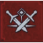 Undying (5 Levels)
{kind=link}
When Vitality reaches 0, Adrenaline Points (if available) will be consumed to restore Vitality. The amount restored is based on the number of Adrenaline Points used, plus an additional amount, as follows:
| Level | Amount (%) |
|---|---|
| 1 | 0 |
| 2 | 25% |
| 3 | 50% |
| 4 | 75% |
| 5 | 100% |
| Points in branch needed to unlock: 8 | |
Notes: This effectively keeps you from dying in combat, which is a fantastic idea if you haven’t grasped the concept of training with a large number of cohesive abilities that work well in tandem with one another. Eventually, you need to change the way you view battles, and utilize swordplay and Signs, Alchemy and defensive magic, to thwart an enemy. The problem with Undying (aside from the fact you need a good reserve of Adrenaline Points) is that you’ll still be alive, but weakened by a lack of available Adrenaline Points. Quickly use Potions or Food to raise Vitality; or better yet, do this just before you die, and negate the need for this ability completely!
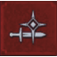 Razor Focus (5 Levels)
{kind=link}
Instantly gain one Adrenaline Point when entering combat. The Adrenaline Points generated by sword blows are increased by the following amount:
| Level | Increase (%) |
|---|---|
| 1 | 5% |
| 2 | 10% |
| 3 | 15% |
| 4 | 20% |
| 5 | 25% |
| Points in branch needed to unlock: 20 | |
Notes: There are many abilities that work from Adrenaline Points, so having a free point at the start of any fight really synergizes well with other combat abilities, especially those from the Fast and Strong Attack branches. If fighting with swords is your primary plan, this is essential. If Rage Management is helping you syphon Adrenaline to use in place of Stamina to cast Signs, this is excellent. This is one of the best abilities to continuously top up your Adrenaline, as you’re likely to be inflicting sword damage most often. This helps with Whirl and Rend too, and stacks with Adrenaline bonuses from equipment, such as the Ursine Armor. Amazing!
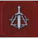 Flood Of Anger (5 Levels)
{kind=link}
When casting a Sign, 3 Adrenaline Points (if available) will be consumed to upgrade the Sign to the highest level (unlocking all bonuses) and increase Sign intensity by the following amount:
| Level | Increase (%) |
|---|---|
| 1 | 25% |
| 2 | 50% |
| 3 | 75% |
| 4 | 100% |
| 5 | 125% |
| Points in branch needed to unlock: 30 | |
Notes: Unless you have other abilities (or potions) working to increase your Adrenaline Points quickly, by the time you’re ready to cast this, the fight may well be over! However, it is always an option to try at the very start of a fight, if you want to begin with a hugely-powerful Sign attack (using Igni, Aard, or Axii for example, or want to enjoy the most powerful defenses of Yrden and Quen) and you’re using a Combat-centric archetype. This is helpful if you aren’t already enjoying these benefits having unlocked these Sign abilities beforehand. It also works with equipment and abilities that increase your Adrenaline.
The Witcher® is a trademark of CD PROJEKT S. A. The Witcher game © CD PROJEKT S. A. All rights reserved. The Witcher game is based on a novel by Andrzej Sapkowski. All other copyrights and trademarks are the property of their respective owners. Learn more at thewitcher.com.